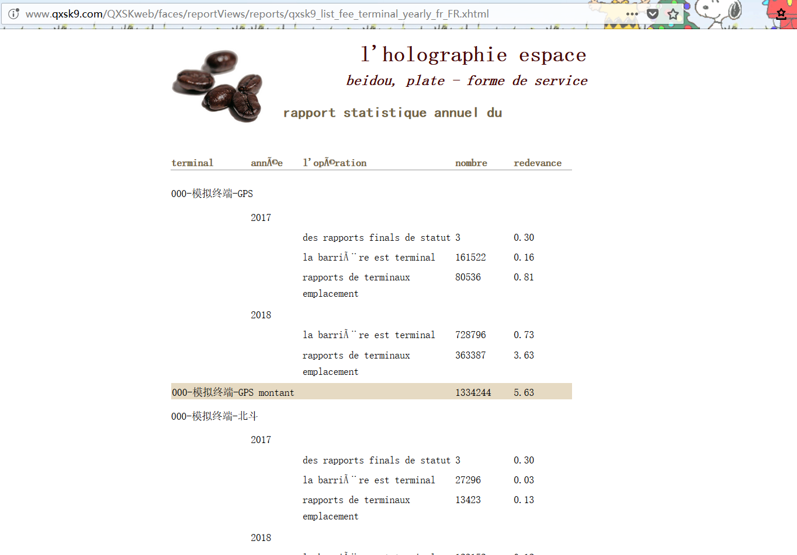

全息时空北斗运营服务平台支持北斗数据网与公共数据网的双向全联通：
- 北斗数据终端通过北斗数据通道向数据中心报告位置信息、发出SOS警报、收发北斗短消息。
- 普通数据终端通过公共数据网向数据中心报告位置信息、发出SOS警报、传输业务数据。
- 用户通过网页客户端或者移动客户端来管理终端、监视终端的位置/轨迹/警报、与北斗数据终端或者普通数据终端互发消息。
- 第三方应用通过网络服务和WebSocket编程接口来使用平台数据、管理北斗数据终端或者普通数据终端。
需要说明的是：服务平台支持终端与客户端（互联网）之间的双向联通，但不支持终端与手机短信（移动通信网）之间的双向联通（只支持终端向手机短信的单向联通）。这是基于安全与性能考量的设计。
系统的逻辑结构图：
全息时空北斗运营服务平台保障信息安全：
- “用户必须合法地获得资源”。用户、客户端、第三方应用均需要提供合法账户信息（认证）才能访问被指派的资源（授权）。
- “数据的来源必须合法”。北斗数据通道天然地保障了北斗终端报告数据的合法性；而普通数据终端需要提供报告码才能提交/访问数据。
- 功能权限控制由账户的角色决定。不同的角色可以使用不同的系统功能集合。
- 数据权限控制由账户/用户组与终端之间的指派关系决定。普通用户必须明确被指派可访问的终端，未指派的数据被禁止访问。
- 权限管理数据均有灵活的管理手段：通过设置“合法性”可以随时启停权限；通过设置“有效期”可以自动启停权限。
- 用户组用以实现集团用户模式的权限管理；同时单个用户也可以被灵活授权以实现个人用户模式。
- 专门的数据中心：自建的机房、顶级的服务器、防火墙和存储设备、自主研发的北斗硬件设备、专职的网络管理员、严格的管理规范。
- 平台运行在最强的Linux64（Cent OS 7）平台上，并执行严格的安全配置。
- 平台的开发和运行均基于开源软件。
- 完备的系统日志和应用日志。
全息时空北斗运营服务平台支持快捷地按需求定制软件：
- 既适用于北斗定位应用，也适用于非北斗的定位应用（如普通的GPS车载应用、儿童手表、或者运动手环）。
- 既兼容集团用户模式的应用，也兼容个人用户模式的应用。
- 针对具体的数据类型可简易地扩展成不同的业务系统。例如，可插件式地添加新的数据采集模块；又如，可新增报警类型，添加少许代码即可实现数据融合和界面展示。
全息时空北斗运营服务平台提供便捷的管理/使用方式：
- 管理员可以通过网页来使用系统全部功能。
- 可配置的系统参数包括串口管理参数、线程管理参数、数据管理参数、队列管理参数等。
- 系统管理员可以打开/关闭数据串口、查看后端周期性线程的状态。
- 北斗波束和北斗日志被自动收集和存储，管理员可以直接检查北斗数据通道的状态。
- 开发者可以通过调试功能来检查系统异常。如发送北斗命令、解析北斗数据、模拟接收北斗数据、管理GSM模块、模拟网络服务客户端等。
- 在线提交和处理用户反馈。普通用户、管理员、开发者用统一的方式提交报告问题、改进建议、和功能需求。处理进度直接显示给所有用户。
- 普通用户可选择网页客户端、苹果客户端、或者安卓客户端。
全息时空北斗运营服务平台的软件系统由最新技术实现：
- 中心基于Java EE 7的架构实现，它汲取近几年企业应用实现的精华，提供各项技术的最新规范。
- 基于大量企业应用开发的经验：松耦合、强内聚、面向接口编程、面向服务构建。
- 全部基础功能仅用官方基础技术实现：PrimeFace + CDI + JPA，不依赖于第三方技术。
- 串口设备与服务器之间的数据交换利用JMS技术（队列与主题）实现异步读写和并发处理。
- 提供RESTful接口，客户端或者第三方应用可以自选数据格式（XML或者JSON）。
- 提供WebSocket编程接口，客户端或者第三方应用可以获得服务器推送的实时数据。
- 最大程度实现软件复用：利用Netbeans的模板化技术从数据库直接自动生成MVC各层文件。
- 基于各类开源软件：NetBeans + GlassFish + MySQL + ActiveMQ + Log4j + Git + Maven + 百度地图接口 + JasperSoft。
- 苹果客户端以swift编写且利用xcode最新布局技术，从而一次设计和编程即适用于所有苹果机型。
- 安卓客户端采用Android Studio框架编程，并以fragment实现主页面切换。
- 完全的国际化：内部核心数据、接口交换数据、JSF页面元素、Jasper报表元素、客户端界面元素
- 基于selenium/Python的自动化功能测试
- 性能优化：JMS中间件、JSF数据列表的延迟加载（Lazy loading）、基于JPA层注入的读写分离、GTID模式实时同步的主从数据库、避免陈旧读问题（stale read）的优化方案
系统的技术结构图：
自动统计报表示例：

